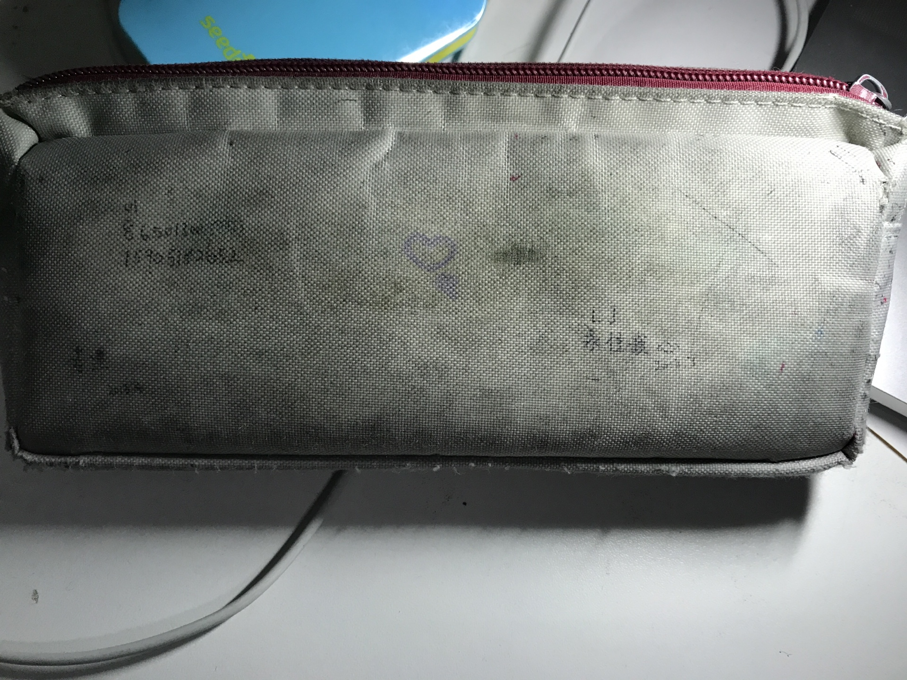

致曾经的她
今天把她要借的书在地铁站给了她。
第一眼居然都没认出来，那个留着长马尾，梳着刘海，戴着长方框型眼镜，穿着深蓝色校裤红色帆布鞋的初中女生已经不在，取而代之的是披肩长发，圆框眼镜，黑色丝袜黑色短靴的陌生女性。
身影已经无法重合，除了声音还是那个声音外，别的一切似乎都都改变了，无论是从外貌上，还是从我可以窥见的内在的一些东西。
六七年的光阴居然可以改变着这么多，把一个曾经天真单纯地发誓用永远在一起的清纯女生变成了如今我几乎完全陌生的大学女性，那很难想象时光再过六七年之后，会不会就完全形同陌路了呢。
之前的我对她在潜意识里还抱有幻想，奢望着未来的某一天，也许她可以回心转意，以前看过一条QQ空间说说，“如果一个男生真心喜欢一个女生的话，那他从来都不会想象，更不会在梦中出现和她做爱的情景，而且别的有她在身边的美好的场面”。貌似真的，一次都没有做过这样的梦，即使在白天脑子里一闪而过的幻想之后也会在内心非常严厉地责问自己。
她可能不知道，大一上学期的时候我因为高考没考好的原因一直不敢和她联系，等到了大一下时候终于鼓起勇气想找她聊聊天的时候，换回的缺只是长期的不回复，即使有，也只是一些模糊回应；等到四月份南林的樱花开了，问她能不能来看的时候，她却说我已经和我的男朋友去鸡鸣寺看过了。我一直记得我是在中午出食堂的时候看到这条QQ消息的，从食堂回到宿舍的那条路我都不是到是怎么走完的，也许我当时真的太天真了，天真到以为这只是她开的玩笑，毕竟高中那阵子都聊的蛮开心的，也说了要战胜时间永远在一起的，为什么就过了一年不到的时间就变了这么多。
从此我就迷上了日本动漫，也许是为了逃避这一残酷的现实，每每看到动画里初中或高中的学生情侣一起战胜生活中的种种困难，经历了许多难忘有趣的瞬间，终成眷属时，我打心底往外地为他们真心祝福，希望在那个虚幻的世界里他们可以永远永远地在一起。
大二下学期，正在宿舍码代码的我突然收到她的一则QQ消息“我们在一起吧”。突入其来的一句话把我彻底弄懵了，去翻了翻她的朋友圈QQ空间才大概猜测到她和她的男朋友分手了。单纯的我当然非常高兴啦，以前看别人都是天天给女朋友发早安的，我也照着做了，开始的一段时间里还是有回应的，但是之后又和大一的时候一样了。后来在她的一则朋友圈评论里，她明确地表现了“我们之间还是算了”的态度，也许这就意味着这一段短暂时光彻底终结。
大三的时候，我突然发现她把我列入了禁止访问她QQ空间的名单，非常惊讶，不过也没问她为什么，没有意义，但是明明这样，只要我发的说说有她的点赞我依然莫名其妙地感到开心，心里想着如果我将来变的很优秀的话也许她还是会回来的吧。
虽然后面也有过QQ的消息来往，但真的只是普通朋友之间的对话了，至少她发来的消息是这样，我努力地构思措辞，尽量把语气也变的像和一个普通的陌生人对话一样，自己都觉得很变扭。
记得在高一暑假的时候她曾说过，如果我们战胜了时间，那我们就在一起吧，如果输了，那我们一定要做最好的朋友。
怎么可能呢，在一起是两个人的事，而分开一个人就足够了，如果一个人对另一个人以普通朋友的态度而另一个人还喜欢着对方的话，之后让后者感到无比的痛苦，最后肯定是连普通的朋友都无法做成的结局。
昨天上考研英语课，老师对我说她在学生时代问过一个美国老师何为婚姻，回答是“Marriage is a teamwork，is a cooperation”。
曾经的Eclipse最为开发神器在开发者圈子里红极一时，但是，随着JBrain开发Intellij IEDA作为新一代神器的崛起，无数的开发者抛弃了前者毅然转向了后者；究其原因，无疑是后者可以比前者更好地提高程序员的生产力，启动更快，工具集成地更好，代码补全，重构更加强大，也就是可以让开发者更加愉快地写代码。就算是有程序员因为情怀依然使用前者，那他们是以他们的生产力下降作为牺牲的。
如果把她比作是程序员，那我也许就是那个Eclipse吧。
初中时代我成绩在班上非常好，中考时候也发挥不错，进入了本校高中部最好的班级，而现在的我呢，高考失利，在一所普通二本学校就读，和她找的211高校优秀的男朋友怎么能比呢。
本来是想等到大学毕业之后在把这些记录写出来的，但是今天看着几乎完全陌生的她无论如何也抑制不住书写的欲望，花了近一个小时写下了如上的文字，写完顿时觉得释怀不少，就把那个十六七岁的她的身影永远封藏在内心最深处，正式地向那个美好的学生时代道别，也许将来也可能会离开留存着曾经美好记忆的六朝古都。
谢谢最美好的她在我最美好的时光里的出现和陪伴，也希望如今这个完全陌生的她找到属于她的Intellij IDEA，永远永远地幸福下去。

2018.12.9